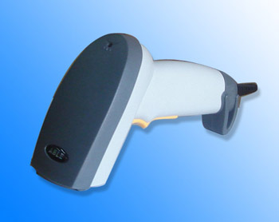
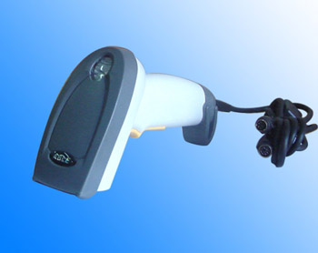

公司简介
沈阳世纪森博自动识别技术有限公司
沈阳世纪森博自动识别技术有限公司前身为北京南开戈德信息技术有限公司沈阳办事处，现为北京南开戈德信息技术有限公司合作伙伴。公司依托雄厚的科研实力，专业化、高素质的员工团队，成为国内自动识别领域最具研发规模和实力的领先厂商。具有强大的软件开发和系统集成能力，可为制造业（汽车制造、电子及通信设备制造、食品加工、机械加工、钢铁、石油化工等）、零售业、新闻出版、仓储物流、医疗、军队、金融、税务等行业客户提供可靠的设备和先进的解决方案。
公司致力于在自动识别领域提供卓越的产品和解决方案以提高人们的工作效率和生活质量，推动我国信息应用技术的飞跃公司已开发出企业移动解决方案、医院移动解决方案、电力设备二维条码防伪解决方案、工商管理解决方案、二维条码税务申报系统、图书物流无线仓储管理系统、钢铁行业无线仓储管理系统、库房管理系统、贴片机上料控制系统、串货控制系统、销售门店管理系统、移动盘点系统、通用证卡制作平台系统等系列行业解决方案和软件产品。
公司从事条码识读设备、无线局域网络设备、数据采集终端设备、条码打印机及耗材的销售和技术服务，并致力于识别技术的行业应用。已建成了覆盖全国的分销网络和技术服务中心，可为行业客户提供领先的条码扫描、条码打印、移动计算和无线网络的全系列产品和解决方案。
地址：和平区十三纬路39号格林SOHO A座1810
电 话： 86-24-23935885 传 真： 86-24-23935885
E-mail:sy_sembol@126.com
产品介绍：
Symbol LS2208ap手持激光条码扫描器
商用条码扫描器，优异的性价比，零售业首选，也广泛用于药房管理、库存管理、图书查验和资产跟踪等
外形小巧，操作方便，支持RSS，兼容GTIN
支持同类产品不能支持的ADF数据格式
扫描迅速，每秒扫描 100 次
可承受1.5米高度坠落至水泥地面
装有闪存存储器，便于产品现场升级/定制
详细资料：
|
LS 2208AP手持激光条码扫描器
物理参数 尺 寸： 15.2 cm H x 6.3 cm W x 8.4 cm 重 量： 5.15 oz./146 gm 电 压： 5 volts +/- 10% 电 流： 标准 130 mA，最大 175 mA 电 源： 主机电源或外置电源 颜 色： 收银机白色或微黑色
性能参数 扫描类型： 双向 光 源： 650 nm 可见激光二极管 扫描速率： 典型情况下每秒扫描 100 次 额定工作距离：对于 100% U.P.C./EAN 码型从直接接触到 17 in./43 cm 的扫描距离都可正常扫描 印刷对比度： 最低 20% 反射差异 旋转视角：1 ±30 度 倾斜视角：2 ±65 度 偏移视角：3 ±60 度 解码能力： U.P.C./EAN, U.P.C./EAN with Supplementals, UCC/EAN 128, Code 39, Code 39 Full ASCII, Code 39 TriOptic, Code 128, Code 128 Full ASCII, Codabar, Interleaved 2 of 5, Discrete 2 of 5, Code 93, MSI, Code 11, IATA, RSS variants, Chinese 2 of 5 支持接口： 三RS232、键盘插口、Wand、IBM 468X/9X、USB、Synapse 和 Undecoded
环境参数 操作温度： 0 ~ 50oC 存储温度： -40 ~ 70oC 湿 度： 相对湿度 5% 到 95%（无凝结） 抗震能力： 从 5 ft./1.5 高处多次跌至混凝土地面仍可正常工作 无干扰环境光： 在正常办公和工厂照明环境下或直接曝露在阳光下均不会对其产生任何影响 静电放电： 符合 15 kV 空气放电和 8 kV 接触放电要求
强制规定 电安全性： 符合 UL1950、CSA C22.2 No. 950、EN60950/IEC950 EMI/RFI： FCC Part 15 Class B, ICES-003 Class B, European Union EMC Directive, Australian
SMA,
激光安全性： CDRH Class II, IEC Class 2
附件 免持式 Intellistand TM 20-61019-01 或 20-61019-02 |
产品介绍：
DS 6608 数据扫描器

价格合理、性能出色的数字扫描器，可用于全方位扫描所有的主要一维条码和二维条码
对于 UPC/EAN 符号，景深为2.5 到 35.5 厘米
直观、清晰的对焦模式，快速扫描功能使操作人员可以提高工作效率和对工具的满意度
即便是损坏或印刷质量差的条码，也能获得出色的扫描性能
详细资料：
|
DS 6608 数据扫描器
物理参数 外形尺寸： 6.55"高×2.82"宽×4.72"厚 (16.64cm高×7.16cm宽×11.99cm厚) 重 量： 6.04盎司/181.4克(不包括通讯线) 输入电压： 5 V ± 10% 工作电流： 250 mA（均值） 电 源： 视主机而定 颜 色： 类似收款机的白色或浅黑
性能参数 光 源： 650 nm 可见激光二极管 分 辨 率： 640×480 最小条宽： 5 mil (0.127 mm) 额定工作距离： 对于 100% 的 UPC/EAN 符号，介于 1 in (2.5 cm) 和14 in.(35 cm) 之间 打印对比度： 最低 25% 反射差异 旋转视角： 偏离正常视角 ± 180 度 倾斜视角： 偏离正常视角 ± 60 度 偏移视角： 偏离正常视角 ± 50 度 解码能力： 可对常见一维条码、二维条码和邮政编码进行解码，如UPC.EAN、UCC.EAN 128、 JAN 8 & 13、Code 39、Code 39、Full ASCII、Code 39 Trioptic、Code 128、Code 128 Full ASCII、Codabar (NW7)、Interleaved 2 of 5、Discrete 2 of 5、Code 93、MSI、 Code 11、Code 32、Bookland EAN、IATA、UCC/EAN RSS和RSS变体；PDF417、 microPDF417、MaxiCode, DataMatrix (ECC 2000)、Composite Codes和QR Code； U.S. Postnet、U.S. Planet、U.K. Postal、Japan Postal、Australian Postal和Dutch Postal 支持的接口： RS232、Keyboard Wedge |
公司简介
东莞爱普科技有限公司
东莞爱普科技有限公司专业生产激光条形码扫描器、条形码扫描器引擎等光电产品。公司以追求完美品质、提供客户之所需的质量方针，为客户提供质优价廉的产品和完善的的售后服务。以客为尊，诚信合作，我们竭诚为国内外客户提供快捷优质的专业服务，共同促进条码事业的发展
公司研发部门能够根据市场需求，敏锐的捕捉市场动向、以最快的速度开发市场急需的产品，满足客户的不同需求。独立完善的生产体系可以最大限度的降低成本，为客户提供性价比最合适的产品。
东莞爱普科技有限公司
公司地址:广东省东莞市南城区银丰路联益村联益路二号
电话:0769-22992331 22992361 传真:0769-22992361
产品介绍：
A268型激光条形码扫描器

A268激光条形码扫描器设计新颖, 连接简单方便, 识读能力强, 性能稳定. 被广泛应用于工厂、商业POS系统、图书馆、保险、进销流存管理等多个领域. 是一款性价比极高的产品。
详细资料：
性能参数：
|
产品介绍：
A4000型一维激光条形码扫描器

A4000型一维激光条形码扫描器基于高精度芯片的设计，是一款高性能的条形码识读设备。能以每秒500线的速度高速扫描与解码，其最大的特点是能高速准确的识读2.5mil的极细小条码。A4000型条形码扫描器可能是目前国内性能最好的一维条形码识别器。
详细资料：
性能参数：
|